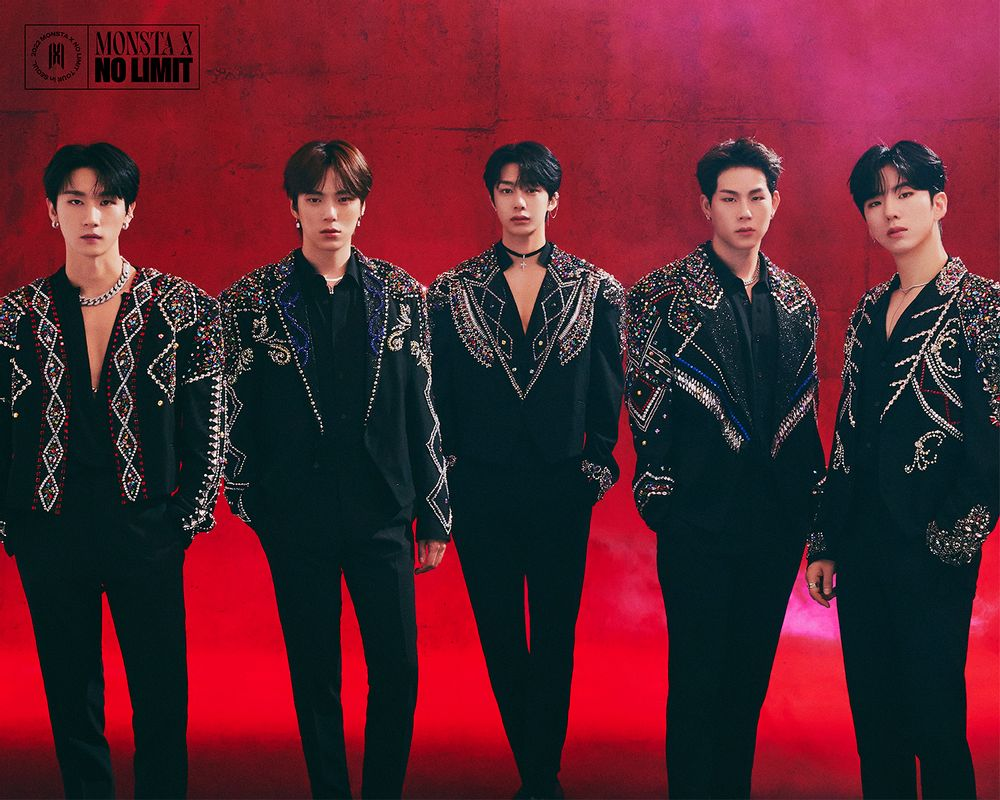

몬스타엑스는 2015년 5월 14일에 데뷔한 스타쉽엔터테인먼트 소속의 6인조[4] 보이그룹이다.  그룹명은 MON(나의)[5] + STA(스타) + X(미지의 존재)를 결합해, K-POP을 평정할 괴물들이라는 뜻을 지니고 있다. 1세대 신화, 2세대 2PM에 이어 3세대 짐승돌의 타이틀을 이어 받고 있다.
데뷔 초부터 역동적인 무대와 강렬한 콘셉트를 유지하면서 한 단계씩 올라온 그룹이다. DRAMARAMA, Shoot Out, Love Killa 등을 거치며 꾸준히 인기를 모으더니, 아이돌 그룹으로는 이례적으로 데뷔 7년차인 2021년 미니 10집 No Limit, 데뷔 8년차 2022년에 미니 11집 SHAPE of LOVE로 계속해서 커리어 하이를 갱신하고 있다. 해당 앨범의 타이틀곡 Rush Hour와 LOVE가 멤버 주헌의 자작곡이며 형원과 아이엠이 다수의 수록곡 작사/작곡에 참여하는 등, 경력이 쌓일수록 멤버들의 참여도가 높아지고 있다. 미니 11집 SHAPE of LOVE는 월드와이드 아이튠즈 앨범 차트 1위를 기록하였고, 타이틀곡 LOVE의 MV가 유튜브 트렌드 전세계 1위, 한국 3위에 오르기도 했다.